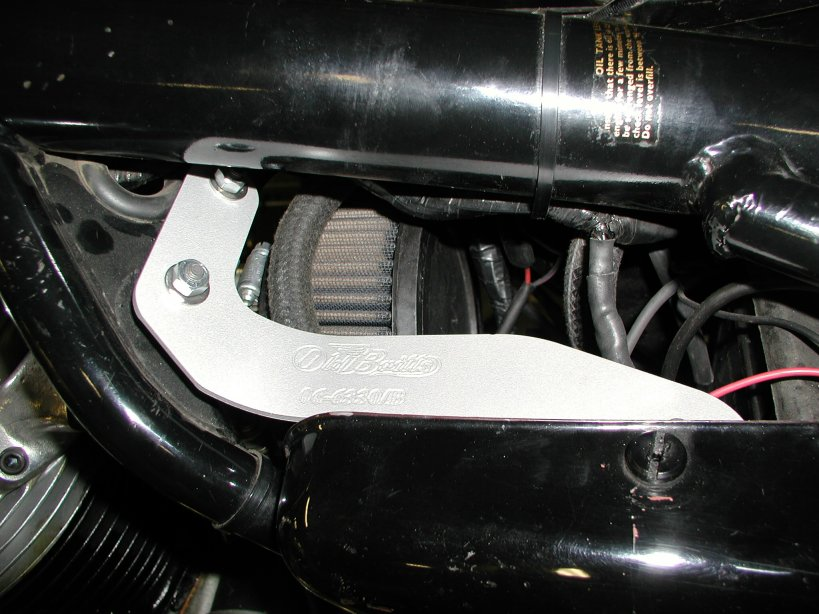
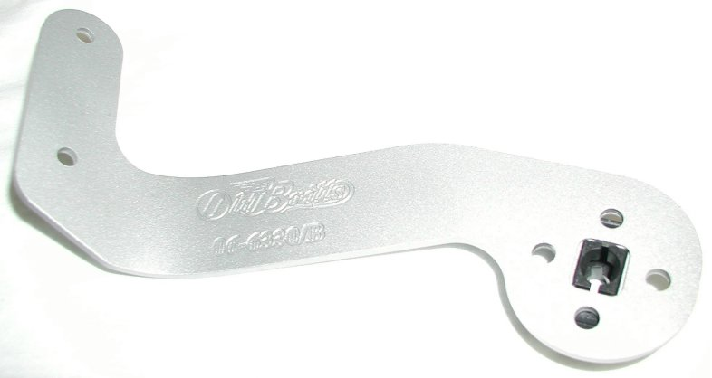
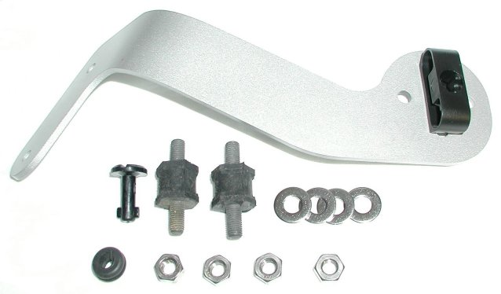

Sidepanel Bracket and Bracket Kit
for
Mk3 Roadster, Left Side
The current price for the bracket only (part # 06-6330/B) is $75.00 and for the complete kit (part # 06-6330/BK) is $95.14, as of 02/12/21.
If your 1975 MK3 has had its big black air box removed or you want to remove it for a better filtering system,
you will need a way to mount your left hand side cover.
We have milled up an aluminum bracket that takes the place of the bracket on the air box and uses the same dzus
fastener system as the original.
The bracket bolts to two rubber mounts (the same rubber mounts used on your oil tank)
that fit into the two holes already in your frame.

Installation is easy:
First - mount the two rubber oil mounts on your frame as shown, using two 1/4" washers and two nuts.
Second - push the dzus fastener through the rubber grommet and mount on the top of the side cover.
We have found it much easier to mount the grommet to the side cover with the fastener inserted than try to insert
the fastener through the grommet after it is mounted on the cover.
Third - Mount the bracket to the rubber mounts using the remaining washers and nuts. The bracket comes with the
dzus receptacle already mounted for your convenience.
If you are just purchasing the bracket and reusing your existing dzus receptacle, the top of the receptacle compresses to
fit into the rectangular hole in the bracket. The easiest way to insert the receptacle into the bracket is to slide one side
into the hole and using a screw driver, carefully compress the top of the receptacle until it pops into the hole.
Last - put the side cover on your bike by pushing the bottom down between the "Z" bracket and the frame, hook
the back of the cover over the lug, then hold the bottom of the receptacle/bracket and push down on the fastener and
turn it until it locks in place.
Note: If you are not familiar with this dzus system, you may want to perform the second step first and fasten the bracket
to the side cover, off the bike, to see how it feels to fully lock it into place.


The above picture shows all the items in the sidepanel bracket kit (part # 13-066330/BK) and the following table describes the items in the kit.
| Ref No. | Part No. | Description | Qty. Inc. |
| 1 | 06-6330/B | Bracket, Sidepanel, Left Hand, Mk3 Roadster | |
| 2 | 06-4066 | Receptacle, Dzus Fastener, MK3 | |
| 3 | 06-6435 | Fastener, Sidecover, MK3 | |
| 4 | 03-4072 | Grommet, MK3 | |
| 5 | 06-0636 | Rubber Mount, Oiltank | |
| 6 | 00-0012/SS | Flat Washer, 1/4, Stainless | |
| 7 | 14-0301/SS | Hex Nut 1/4 x 28, Stainless |
This page was written and designed by F. H. Eaton & Associates. If you have any questions or comments, please contact us at info@fheaton.com